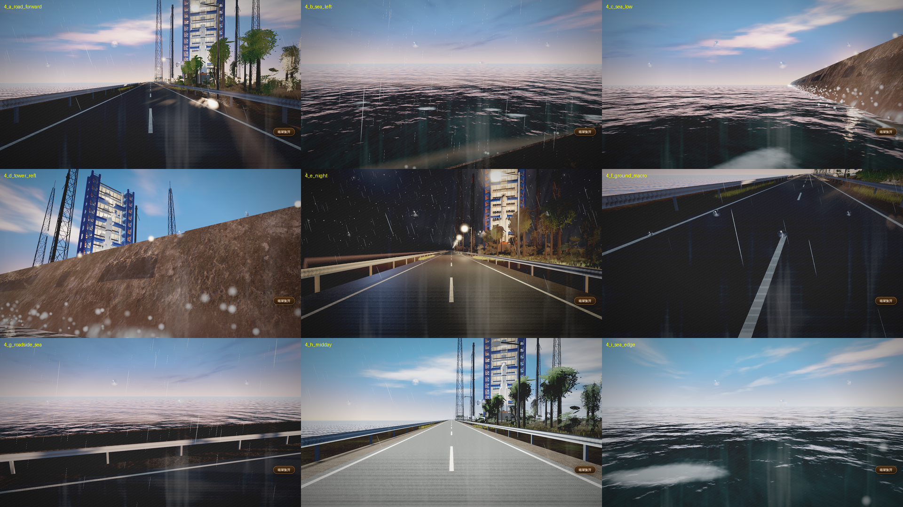
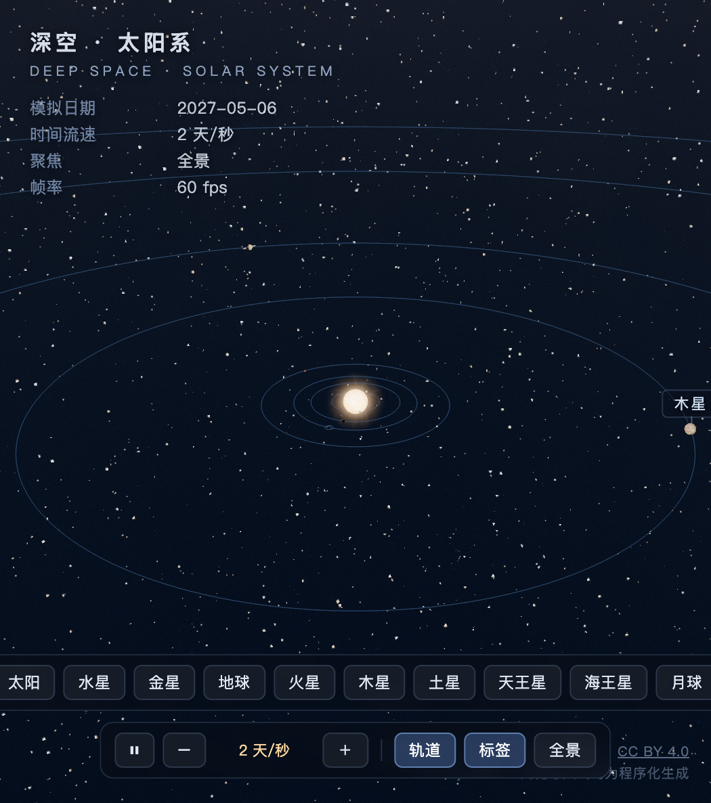

地面场景 GROUND
雨天滨海公路与长征五号发射工位。点火箭的任意部件，那一段会缓缓升起、 外壳变半透明，露出液氧/液氢贮箱、发动机与摆动伺服。右下角可以让塔臂外摆 90°。

深空场景 DEEP SPACE
太阳与八大行星。大气是球形壳层单次散射，气态巨行星的条带是程序化 FBM， 点击行星可以看到真实直径、轨道与周期。浮动原点 + 对数深度撑住天文尺度。
实时 3D 场景 · three.js 单文件 · 浏览器直接运行

雨天滨海公路与长征五号发射工位。点火箭的任意部件，那一段会缓缓升起、 外壳变半透明，露出液氧/液氢贮箱、发动机与摆动伺服。右下角可以让塔臂外摆 90°。

太阳与八大行星。大气是球形壳层单次散射，气态巨行星的条带是程序化 FBM， 点击行星可以看到真实直径、轨道与周期。浮动原点 + 对数深度撑住天文尺度。